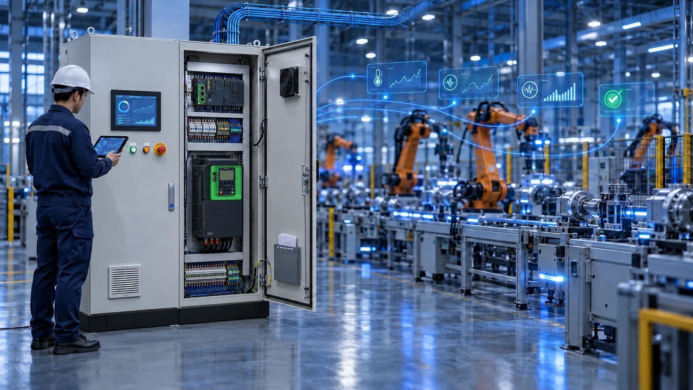

배포 예정: 2026년 10월 12일(월) · 인더스트리뉴스
아래 내용은 배포 예정 보도자료 원고입니다. 언론 보도 전이며, 기사 원문 링크는 아직 없습니다.

[부산=2026년 10월 12일] 스마트제조 솔루션 기업 ㈜동인엔시스(대표이사 백민기)가 품질·환경·안전보건 경영시스템을 하나로 운영하는 ISO 통합경영체계를 구축하고, 중소벤처기업부 스마트공장 공급기업 역량진단을 신청했다고 12일 밝혔다. 동인엔시스는 이를 발판으로 중소벤처기업부 스마트제조기술 전문기업과 산업통상자원부 AI 팩토리 전문기업 지정, 데이터바우처·AI바우처 공급기업 신청, 혁신제품 지정을 차례로 추진한다.
세 개의 ISO를 하나의 매뉴얼로
동인엔시스는 ISO 9001(품질), ISO 14001(환경), ISO 45001(안전보건) 인증을 각각 보유하고 있었으나, 이번에 세 경영시스템을 한 체계로 묶은 '통합경영 매뉴얼'과 '통합 기록양식집'을 제정했다.
통합경영 매뉴얼에는 설계·제작·납품 품질 관리와 환경 관리뿐 아니라 위험성평가, 안전보건교육, 근로자 건강진단, 안전보건 예산 집행, 협력업체 안전보건 역량 평가, 반기별 이행 점검, 산업재해·중대재해 발생 시 대응·보고 절차 등 법정 안전보건 의무 이행 방법을 함께 담았다. 통합 기록양식집은 품질·환경·안전보건 양식 33종과 별지 2종으로 구성해, 직원이 매뉴얼에서 해당 절차를 확인하고 바로 양식을 작성해 기록을 남길 수 있도록 했다.
회사 측은 제어반 설계·제작부터 현장 설치와 시운전, 사후관리까지 직접 수행하는 만큼, 고객 현장에 납품하는 제품의 품질과 설치 현장의 안전을 하나의 기준으로 관리하기 위해 통합 체계를 도입했다고 설명했다.
공급기업 역량진단 신청… 데이터 솔루션 3단계 패키지로
스마트공장 공급기업으로 등록돼 있는 동인엔시스는 이번에 공급기업 역량진단을 신청해 기술·수행 역량을 객관적으로 검증받을 계획이다. 공급기업 역량진단은 스마트공장 보급사업에 참여하는 공급기업의 기술력과 사업 수행 역량을 평가하는 절차로, 우수등급을 받은 공급기업은 중소벤처기업부의 '스마트제조기술 전문기업' 지정을 신청할 수 있다. 동인엔시스는 역량진단에서 우수등급을 받아 전문기업 지정까지 추진할 계획이다.
이와 함께 공급 솔루션을 '산업설비 OT 데이터 수집·표준화·모니터링 및 AI 연계 솔루션'으로 정비했다. 제조현장의 PLC, VFD(인버터), EOCR(전자식 과전류 계전기), 센서, 계측기에서 나오는 운전 데이터를 모아 정제·표준화하고, 설비 모니터링과 AI 이상감지, 디지털 트윈, MES·ERP 연계에 쓸 수 있는 제조데이터로 만드는 솔루션이다. Modbus TCP/RTU, MQTT, OPC UA 등 주요 산업통신을 지원해 신규 설비는 PLC에서 바로, 기존 설비는 게이트웨이를 거쳐 같은 데이터 구조로 연결한다.
도입 방식은 제조기업의 수준에 맞춰 세 가지 패키지로 나눴다. 스마트공장을 처음 도입하는 기업을 위한 'Basic', 데이터 표준화와 MES·ERP 연계가 필요한 기업을 위한 'Standard', AI 이상감지와 설비 상태 모니터링, 디지털 트윈 연계까지 원하는 기업을 위한 'AI Advanced'다.
AI 팩토리 전문기업, 데이터·AI 바우처, 혁신제품까지
동인엔시스는 산업통상자원부와 한국산업기술기획평가원(KEIT)이 추진하는 'AI 팩토리 전문기업' 지정을 준비하고 있다. 제어반에서 수집한 설비 운전 데이터를 AI 이상감지·예지보전으로 연결하는 제조 AI 적용 역량을 내세울 계획이다.
또 설비 운전 데이터를 수집·가공·표준화·분석하는 '산업설비 OT 데이터 활용서비스'로 데이터바우처 공급기업 신청을, AI 이상감지·예지보전 솔루션으로 AI바우처 공급기업 등록을 준비하고 있다. 공급기업으로 선정·등록되면 제조기업은 정부 바우처를 활용해 설비 데이터 구축과 AI 적용을 시작할 수 있다. 이와 함께 2027년 조달청 혁신제품 지정도 추진한다.
동인엔시스 백민기 대표이사는 "제조현장의 설비를 단순히 제어하는 것을 넘어, 설비 데이터를 수집·표준화하고 AI가 활용할 수 있는 제조데이터로 연결하겠다"며 "통합경영체계로 품질과 안전의 기준을 먼저 세운 만큼, 제조기업이 믿고 맡길 수 있는 공급기업이 되겠다"고 말했다.
공급기업 솔루션 설명서와 서비스 설명서는 동인엔시스 홈페이지(donginensis.com) 자료실에서 내려받을 수 있다.

회사 개요
- 회사명: ㈜동인엔시스 (DONG-IN ENSIS CO., LTD.)
- 대표이사: 백민기
- 설립: 1991년 10월 (법인 전환 1997년 7월)
- 주요 사업: 지능형 제어반, 산업용·선박용 제어시스템 설계·제작, 스마트제조 데이터 솔루션
- 경영시스템: ISO 9001·14001·45001 통합경영체계
- 본사: 부산광역시 부산진구 진연로9번길 47
- 홈페이지: www.donginensis.com
사진 제공: ㈜동인엔시스
보도 문의: 051-862-3668 · dongin@donginmne.com
공급기업 솔루션·서비스 설명서 보기 →